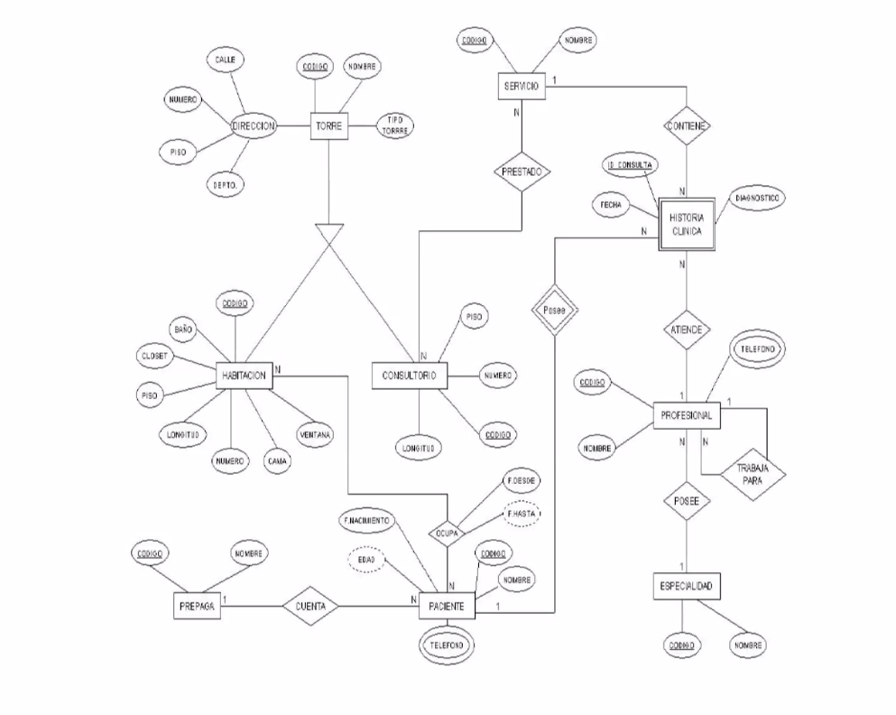

Lección 40 · Unidad 5 · Integrador
TP5 Clínica: del DER de la cátedra a los scripts
Los profes dieron el DER. El trabajo ya no es modelar: es leer un modelo ajeno, traducirlo a tablas sin perder nada, y después escribir los scripts. Esta lección cubre las dos primeras partes y te deja el camino armado para la tercera.
La primera versión de la consigna no traía el DER, y el grupo modeló desde cero. Los
docentes aclararon que el DER de referencia es el de ellos
(raw/TP5/TP DDL-DML Clinica con DER.pptx, slide 8), y que el foco del TP son
los scripts: DDL, inserts, vistas y consultas. Modelar bien ya no suma; lo que
suma es mapear fiel ese DER y que los scripts funcionen.

01Leer el DER antes de tocar nada
Con el diagrama a la vista, hacé el inventario en papel: las entidades (cuál es débil), y cada rombo con sus dos extremos y su cardinalidad. Recién después abrí la respuesta. Es la Forma 2 del parcial (PARCIAL.md): DER dado, pasarlo a relacional.
Inventario: 9 entidades y 9 relaciones
Entidades: TORRE, HABITACION, CONSULTORIO, SERVICIO, PACIENTE, PREPAGA, PROFESIONAL, ESPECIALIDAD y HISTORIA CLINICA, que es débil (rectángulo doble).
| Rombo | Extremos | Razón |
|---|---|---|
| (triángulo) | TORRE → HABITACION, CONSULTORIO | especialización |
| PRESTADO | SERVICIO — CONSULTORIO | N:N |
| CONTIENE | SERVICIO — HISTORIA CLINICA | 1:N |
| POSEE (doble) | PACIENTE — HISTORIA CLINICA | 1:N, identificadora |
| ATIENDE | PROFESIONAL — HISTORIA CLINICA | 1:N |
| TRABAJA PARA | PROFESIONAL — PROFESIONAL | 1:N, unaria |
| POSEE | ESPECIALIDAD — PROFESIONAL | 1:N |
| OCUPA | HABITACION — PACIENTE, con F.DESDE y F.HASTA | N:N con atributos |
| CUENTA | PREPAGA — PACIENTE | 1:N |
Atributos especiales: DIRECCION compuesto; TELEFONO multivaluado (doble óvalo) en PACIENTE y en PROFESIONAL; EDAD derivado (punteado); F.HASTA también punteado; ID_CONSULTA, clave parcial de la entidad débil.
02Diez decisiones de mapeo
Cada una aplica una regla que ya viste. Para cada título, decí qué tabla o columna sale, y después abrí la decisión.
1 · Entidades fuertes
Cada una es una tabla, y su CODIGO subrayado es la PK. Sale TORRE,
SERVICIO, PREPAGA, PACIENTE, PROFESIONAL,
ESPECIALIDAD. HABITACION y CONSULTORIO también tienen su propio CODIGO; eso
importa en la decisión 3.
2 · DIRECCION y LONGITUD
Un compuesto se aplana: DIRECCION se convierte en Calle, Numero, Piso, Depto
dentro de TORRE. LONGITUD está dibujado como simple, pero el enunciado dice
"longitud (ancho y largo)": se mapea como Ancho, Largo. Cuando el texto y el
diagrama difieren en un detalle así, se respeta el texto y se aclara en el informe.
3 · El triángulo de TORRE
La regla de la especialización (0013)
dice que el subtipo hereda la PK del supertipo. Acá eso no funciona: la PK de HABITACION
sería Cod_Torre, y una torre tendría una sola habitación. El propio
DER lo resuelve dándole a cada subtipo su CODIGO.
El triángulo está usado como "una torre se divide en habitaciones o consultorios", y
eso es una relación 1:N. Se mapea así: HABITACION(#Cod_Habitacion, (FK)Cod_Torre, …),
y lo mismo CONSULTORIO. Ya lo habíamos discutido para el DER del grupo: una habitación
no es una torre. No cambies el DER de la cátedra, pero si te preguntan, esta es
la justificación del mapeo.
4 · Las 1:N comunes
La FK va en el lado N (0010):
PACIENTE.Cod_Prepaga, PROFESIONAL.Cod_Especialidad,
HISTORIA_CLINICA.Cod_Servicio y HISTORIA_CLINICA.Cod_Profesional.
5 · TRABAJA PARA
Unaria 1:N: una FK a la misma tabla. PROFESIONAL.Cod_Jefe admite NULL,
porque el jefe del área no tiene jefe. Es lo que pide "para un jefe de área es
importante saber qué personal tiene a su cargo", y alimenta RRHH_Medicos y el pedido 6.
6 · PRESTADO, N:N sin atributos
Tabla nueva con las dos PK como PK compuesta (0024):
SERVICIO_CONSULTORIO(#Cod_Servicio, #Cod_Consultorio). Un consultorio lo usan
varios servicios y un servicio atiende en varios consultorios.
7 · OCUPA, N:N con atributos
Tabla nueva, y los atributos del rombo van ahí:
OCUPACION(#Cod_Habitacion, #Cod_Paciente, #F_Desde, F_Hasta_Prevista).
F_Desde entra en la PK por historicidad: el mismo paciente puede volver a la
misma habitación en otra internación. Sin la fecha, la segunda internación chocaría con la
primera. Es el patrón de "dónde vive el precio": el dato que cambia en el tiempo va en la
relación.
8 · HISTORIA CLINICA, entidad débil
PK = PK del dueño + clave parcial:
HISTORIA_CLINICA(#Cod_Paciente (FK), #Id_Consulta, Fecha, Diagnostico, (FK)Cod_Servicio, (FK)Cod_Profesional).
Fijate qué representa: con FECHA y DIAGNOSTICO adentro, cada fila es una consulta
registrada en la historia del paciente, no "la carpeta". Por eso no hace falta una tabla
CONSULTA aparte. El Id_Consulta se repite entre pacientes (cada uno tiene su
consulta 1, 2, 3…); sólo junto con el paciente identifica la fila.
9 · Los TELEFONO multivaluados
Tabla aparte, como resolviste en el 1er parcial: PACIENTE_TELEFONO(#Cod_Paciente (FK), #Telefono).
Para el profesional, el enunciado distingue "teléfono particular" y "para urgencias", así que
la tabla lleva el tipo: PROFESIONAL_TELEFONO(#Cod_Profesional (FK), #Telefono, Tipo).
La otra opción es poner dos columnas en PROFESIONAL. Es más simple, pero se aparta del doble óvalo.
10 · EDAD y F.HASTA, los dos punteados
EDAD es derivada de F_NACIMIENTO: no se guarda, se calcula en la vista (0039). Si se guardara, quedaría desactualizada al año.
F.HASTA también está punteada, pero no se puede derivar de nada: el enunciado dice
"por cuánto tiempo está previsto que la ocupe", que es un dato que alguien carga. Se
guarda como F_Hasta_Prevista. Probablemente el punteado quiso decir
"previsto", no "derivado". Es una buena pregunta para el docente.
03El modelo relacional resultante
HABITACION (#Cod_Habitacion, (FK)Cod_Torre, Piso, Numero, Ancho, Largo, Cant_Banios, Posee_Closet, Cant_Camas, Posee_Ventana)
CONSULTORIO (#Cod_Consultorio, (FK)Cod_Torre, Piso, Numero, Ancho, Largo)
SERVICIO (#Cod_Servicio, Nombre)
SERVICIO_CONSULTORIO (#Cod_Servicio (FK), #Cod_Consultorio (FK))
PREPAGA (#Cod_Prepaga, Nombre)
PACIENTE (#Cod_Paciente, Nombre, F_Nacimiento, (FK)Cod_Prepaga)
PACIENTE_TELEFONO (#Cod_Paciente (FK), #Telefono)
OCUPACION (#Cod_Habitacion (FK), #Cod_Paciente (FK), #F_Desde, F_Hasta_Prevista)
ESPECIALIDAD (#Cod_Especialidad, Nombre)
PROFESIONAL (#Cod_Profesional, Nombre, (FK)Cod_Especialidad, (FK)Cod_Jefe)
PROFESIONAL_TELEFONO (#Cod_Profesional (FK), #Telefono, Tipo)
HISTORIA_CLINICA (#Cod_Paciente (FK), #Id_Consulta, Fecha, Diagnostico, (FK)Cod_Servicio, (FK)Cod_Profesional)
Trece tablas. Es exactamente la base que usan los ejercicios de las lecciones 0029 a 0039:
el botón Tablas de cualquier ejercicio te la muestra, con datos. Su DDL completo,
con todas las restricciones, está en assets/seeds/clinica.js.
04Qué cambia respecto de lo que hizo el grupo
El patrón de los scripts (Desa en español, Prod en inglés, insert-select, vistas y consultas) queda igual. Lo que cambia es el esquema:
| Antes (Grupo 3) | Con el DER de la cátedra |
|---|---|
ESPACIO como supertipo, PK (torre, piso, número) | Desaparece. HABITACION y CONSULTORIO con código propio y FK a TORRE. |
Fecha_Ocupacion en HABITACION; FK de habitación en PACIENTE | Las dos salen. Aparece OCUPACION, con desde y hasta prevista. |
CONSULTA + HISTORIA_CLINICA como tabla puente de 3 columnas | Una sola tabla, HISTORIA_CLINICA, débil, con PK (paciente, id_consulta). |
| CONSULTA con FK a CONSULTORIO | El DER no une la consulta con el consultorio. Une SERVICIO con CONSULTORIO (N:N). |
| Teléfonos del profesional como dos columnas | PROFESIONAL_TELEFONO con tipo, o se defienden las dos columnas. |
Edad guardada en PACIENTE | Calculada en Vista_Paciente. |
| TORRE sin nombre | TORRE con Nombre y Tipo_Torre. |
La estructura completa: los DROP, los CREATE en dos idiomas, los INSERT … SELECT y las
vistas de TP5_Grupo3_Vistas_Consultas.sql. Es reescribir tablas, no empezar
de nuevo. Y acordate de los dos arreglos que ya vimos: DROP en orden inverso
(0038) y traducciones correctas en Prod
(consultorio es office; consulta es appointment, no query).
05El camino hasta los scripts
Cada paso usa una sola lección nueva y se apoya en el anterior. El criterio de "listo" es concreto: no avances hasta cumplirlo. La práctica guiada de cada paso, con corrección automática, está en practica/tp5-clinica.html.
| Paso | Qué hacés | Lección | Listo cuando… |
|---|---|---|---|
| 1 | Inventario del DER y mapeo a relacional | esta | Escribís las 13 tablas sin mirar la sección 03. |
| 2 | CREATE TABLE de las Desa_, con PK, FK, NOT NULL y CHECK | 0031 | Podés nombrar las 6 restricciones y cada tabla usa al menos las que le tocan. |
| 3 | INSERT … VALUES en orden de padres a hijos | 0037 | Con las FK activas, el script corre entero sin errores. |
| 4 | Las Prod_ en inglés y el INSERT … SELECT | 0037 | Cada columna cae en su par, verificado con un SELECT. |
| 5 | Una Vista_ por tabla de Prod, en español | 0032, 0039 | Vista_Paciente calcula la edad. |
| 6 | RRHH_Medicos | 0036, 0039 | Sofía Luna sale como "NO" jefa. |
| 7 | Los 6 pedidos | 0034–0036 | Cada uno resuelto contra las vistas, no contra las tablas. |
| 8 | Opcional: un trigger que valide algo | 0029 | Podés explicar por qué no alcanzaba con un CHECK. |
06Práctica de mapeo
¿Cuál es la PK de HISTORIA_CLINICA?
¿Dónde se guarda F_DESDE, la fecha en que el paciente empieza a ocupar la habitación?
¿Por qué EDAD no es una columna de PACIENTE?
La consigna con el DER: raw/TP5/TP DDL-DML Clinica con DER.pptx (slides 2–4
el enunciado, slide 8 el DER). Elmasri & Navathe, 5ª ed. — capítulo 7, "Diseño
de bases de datos relacionales por mapeado ER- y EER-a-relacional": los pasos para entidad
débil, 1:N, N:N y multivaluados son exactamente los de la sección 02.
Soy tu profe acá. Hacé el paso 1 en papel, las 13 tablas, sacale una foto y pasámela. Te la corrijo antes de que arranques con los CREATE.